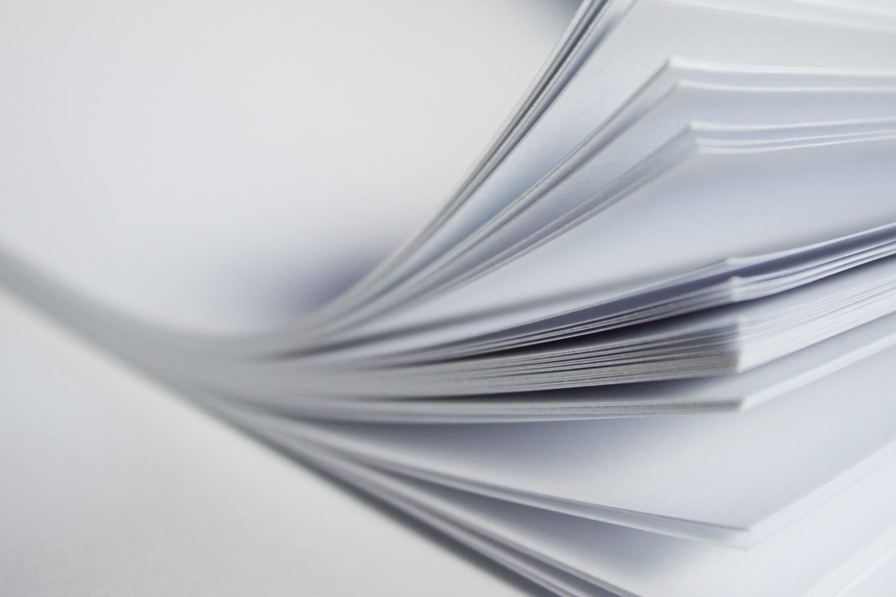
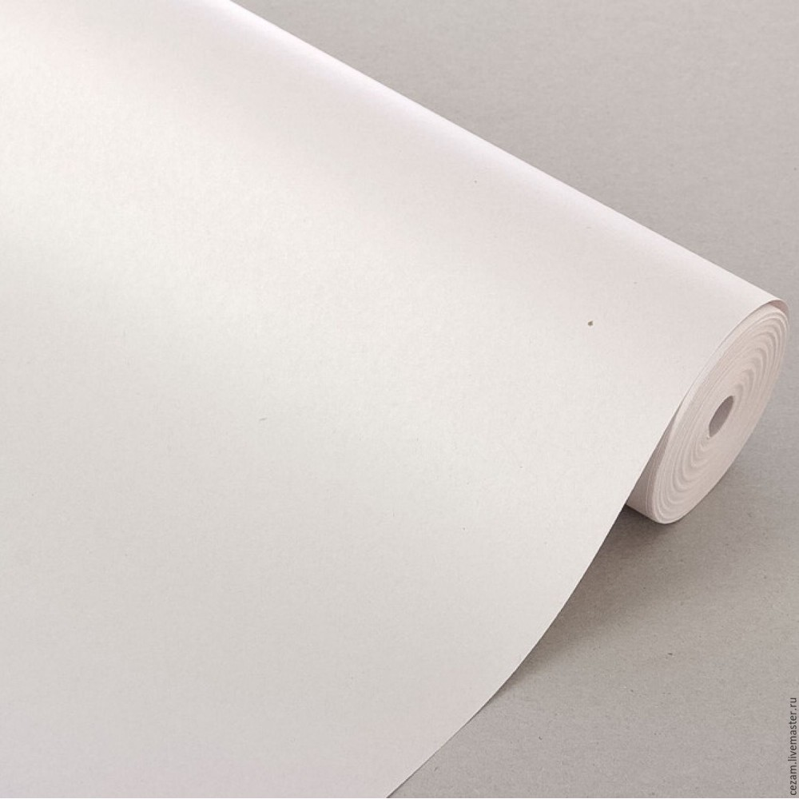

Бумага — волокнистый материал с минеральными добавками. Представлен в виде листов для письма, рисования, упаковки и прочего, получаемый из целлюлозы: растений, а также вторсырья (тряпья и макулатуры).
| Мелованная | Офсетная | Газетная |
|
Качественная, универсальная и наиболее востребованная бумага. На бумажную основу наносится дополнительный, мелованный, слой. |
Офсетная, одна из самых распространенных видов бумаги, соответствуя своему названию, в основном предназначена для офсетной печати. Людям она знакома, в первую очередь, как принтерная или офисная бумага. |
Самый низкий сорт, не отличается белизной и плотностью, может иметь тонированную окраску. Используется для печати газет с большим тиражом, а также применяется в качестве сырья для других сфер, где наибольшее значение уделяется минимизации стоимости производства. |
 |
 |  |